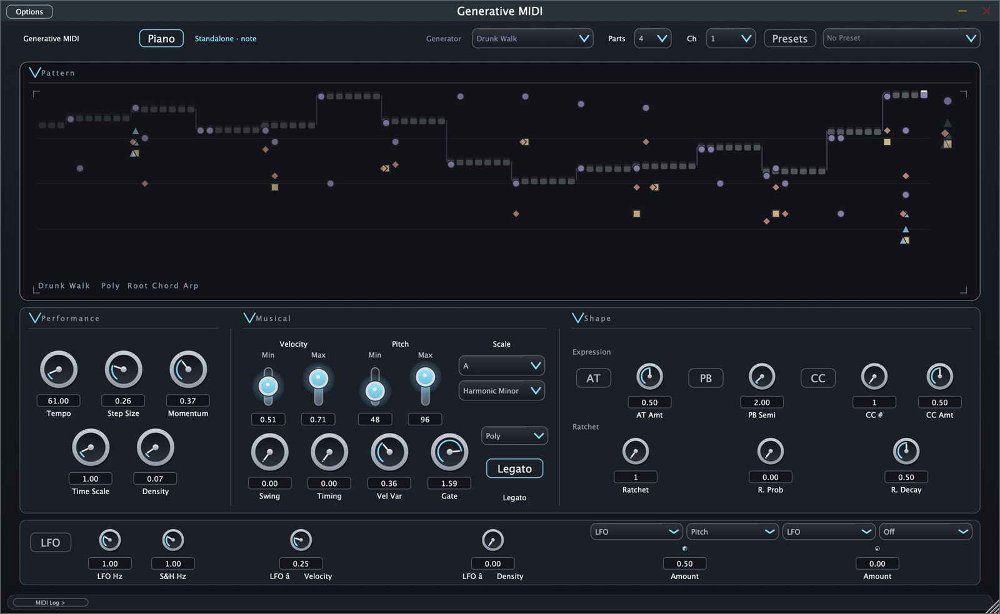
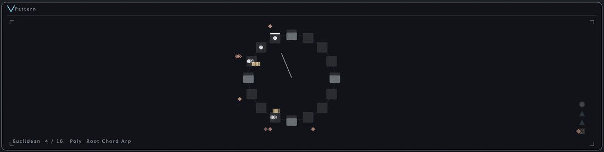
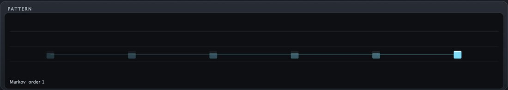
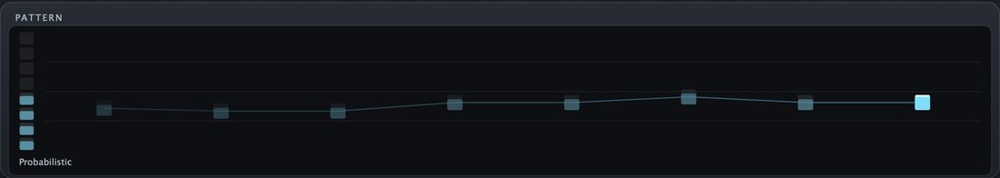
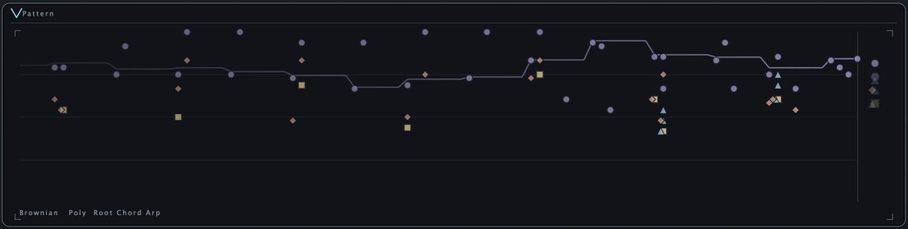
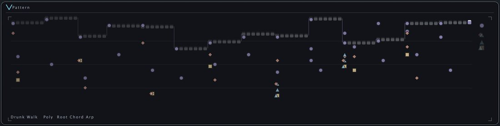
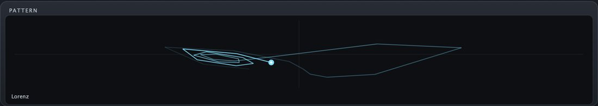
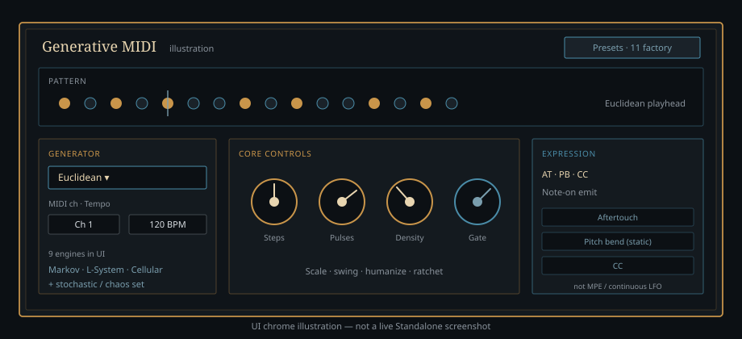

Not a musician or engineer? Read the bold lines. Engineers: the detail and links are one click away.
Ownership
What this proves
Three layers one person owns — not a thin UI over someone else’s engine.
-
The idea engine
Ten ways of inventing a tune or rhythm, from evenly spaced drum-style patterns to random walks and chaos.
Core engines: generative engines (Euclidean, algorithmic, stochastic/chaos), scale quantization, swing, gate, and ratchet paths that feed MIDI scheduling.
-
Packaged for real music apps
It is built in the formats music apps actually load, so it is more than a demo.
Format wrapper: macOS AU, VST3, and Standalone build-verified. AUv3 is a configured CMake target with iOS docs — not store-ready.
-
Checked, not claimed
Every claim on this site points to a file you can open: build records, tests, and notes.
Evidence discipline: status, build verification, design specs, smoke checklist, and session notes live in-repo. Claims point at those files — not at enthusiasm.
Practice
Agentic engineering practice
AI-fluent workflow with a human owner as the gate — written decisions before code, re-verification from disk after.
- Written decisions Capture intent and constraints in status, design, or session notes before changing the realtime path.
- Interface plans Sketch parameter surfaces and UI contracts (LookAndFeel / bitmap specs) so engines and editor stay aligned.
- Implementation Ship C++/JUCE changes across core, processor, and formats — one coherent system, not a demo script.
- Independent re-verification Re-read artifacts from disk: builds, STATUS, and source — not chat memory — before calling work done.
The human remains accountable for what ships and what stays deferred. No vendor branding; no “AI built this” framing.
System
System at a glance
The path a note takes: from your music app, through the plugin, to an instrument. What exists now: host → format wrapper → processor/params → engines → MIDI out.

master. Drunk Walk is playing with 4 parts and the piano on. Two LFO labels show a garbled arrow character; that is how the app rendered when captured, not a site error. The interface may change in later commits.What six of the generators draw
Each generator shows its own picture of the music it is making.
-

Euclidean. Hits spaced evenly around a ring (here 4 of 16 steps). -

Markov. A row of notes, each picked based on the note before it. -

Probabilistic. Notes land by chance; the density knob sets how often. -

Brownian. A pitch line that drifts in small random steps. -

Drunk Walk. Pitch stumbles up and down one step at a time. -

Lorenz. A path traced by chaotic equations; the bright dot is the current point.
Pattern panels cropped from real Standalone captures (docs/qa/logs/viz_*.png, 24 Sep 2026). Perlin, Cellular, L-System and Polyrhythm are not shown here.

Text version of the signal path
- DAW host — the music app, with a MIDI effect slot.
- Format wrapper — AU, VST3, or Standalone.
- PluginProcessor and parameters — the settings list (APVTS) and plugin lifecycle.
- Core engines — generate and schedule the notes.
- MIDI out — notes go to an instrument.

Honesty
Boundary — shipped vs deferred
Grounded in STATUS.md (feature snapshot labeled v0.8.0) and BUILD_VERIFICATION.md. Development status — not finished product polish. Plain version first, technical wording second.
Shipped / verified
- Version 1.0.0, with 57 adjustable settings (56 can be automated). v1.0.0 per
CMakeLists.txtand the GitHub release (STATUS.md labels its feature snapshot v0.8.0) — 57 registered parameters (56 automatable; one legacy slot is kept only so old sessions load), incl. expression + LFO; MIDI channel; stochastic UI. - Checked on my Mac at an earlier build as a plugin and a standalone app. Automatic builds also run for Mac, iPhone/iPad, Windows and Linux. macOS AU / VST3 / Standalone (historical local); CI builds on macOS, iOS (AUv3), Windows, and Linux via
.github/workflows/ci.yml, with pluginval on the VST3 build for macOS, Windows, and Linux. - Ten ways to generate music in the editor. One of them, Polyrhythm, is marked experimental. 10 generators in the editor (Euclidean, experimental Polyrhythm, Markov, L-System, Cellular, Probabilistic, Brownian, Perlin, Drunk Walk, Lorenz).
- Eleven ready-made starting settings (presets), including one for Polyrhythm. Factory presets live (11 including Polyrhythm Layers).
- Notes can carry extra expression at a fixed amount. A slow wobble can vary loudness and note density. Nothing here moves continuously, and it is not a full control-routing screen. MIDI expression — note-on AT / PB / CC (static PB — not MPE). ADVANCED LFO → velocity (and density) — not a full modulation matrix.
- The timing-critical code avoids work that could make it stutter. One known exception remains. Realtime hot-path hardening — Euclidean / ratchet / algorithmic / EventScheduler steady-state alloc-free. Residual: trained Markov map-key vector.
- 43 automated tests run in the automatic build, plus written test notes and a by-hand checklist. Evidence: Catch2 /
ctestin CI (43 test cases, i.e. unit tests) + format builds + Host/UI QA findings (Standalone + REAPER MCP transport gate). Manual smoke: SMOKE_CHECKLIST.md.
Deferred / not claimed
- Not an App Store product, and not finished-product polish. No listening clips on this site yet. App Store / finished product polish; listening clips for this site.
- The iPhone/iPad plugin version is set up to build, but it is not ready for the store. AUv3 as store-ready — configured target + iOS docs only.
- No full control-routing screen, no continuously moving expression, and the Polyrhythm editor still needs work. Full modulation matrix UI; continuous CC/PB / MPE; Polyrhythm step-grid polish.
- The plugin’s own screen has no dedicated touch or accessibility redesign, and no test-coverage percentages are claimed. Dedicated touch / accessibility redesign; test coverage percentages.
Builder
About
Josh Band builds audio software with end-to-end ownership — DSP and architecture through host formats and verification. Generative MIDI is an open-source case study of that practice.
Reference
Glossary
Plain-English meanings for the technical terms on both pages.
- MIDI
- A standard way for music software and instruments to send each other notes and controls — which note, how hard, how long — instead of sending sound.
- Plugin
- A small program that runs inside music software to add an instrument or an effect. This one is a “MIDI effect”: it creates notes rather than sound.
- DAW / host
- A DAW (digital audio workstation) is music-making software such as REAPER or Logic Pro. The “host” is whichever program has loaded the plugin.
- AU
- Audio Units: Apple’s plugin format for macOS music software.
- VST3
- A widely used plugin format that works on Windows, macOS, and Linux.
- Standalone
- The plugin running as its own app, with no music software needed.
- AUv3
- Apple’s newer Audio Unit format, used on iPhone and iPad. Here it is a build target that compiles, not a store-ready product.
- JUCE
- A C++ framework for building audio plugins and their screens.
- Euclidean rhythm
- Spreads a number of hits as evenly as possible across a number of steps. Many traditional drum patterns have this shape.
- Markov chain
- Picks the next note based on which notes tended to follow the current one.
- L-system
- Grows a pattern by repeatedly applying rewrite rules. It was first used to model how plants grow.
- Cellular automaton
- A row of on/off cells that updates every step by simple rules based on its neighbours. The changing pattern becomes notes.
- Lorenz
- A famous chaotic system (the “butterfly effect” equations). As a generator it gives wandering note choices that almost, but never quite, repeat.
- Swing
- Delays every other beat slightly to give a shuffling, uneven feel.
- Gate
- How long each note is held before it is released.
- Ratchet
- Repeats one note several times, quickly, inside a single step, like a drum roll.
- Quantization (scale)
- Snaps notes to a chosen musical scale so that everything sounds in key.
- LFO
- Low-frequency oscillator: a slow, repeating wobble used to vary a setting over time.
- MPE
- MIDI Polyphonic Expression: a way to give each held note its own pitch bend and pressure. This plugin does not do that.
- Realtime
- Audio software has a hard deadline for every small chunk of work. If the plugin is a few milliseconds late, you hear a glitch.
- Allocation-free
- Not asking the computer for new memory while running. Asking can take an unpredictable amount of time, which is risky under a hard deadline.
- CI
- Continuous integration: an automatic service that rebuilds and tests the code whenever it changes.
- Unit test
- A small automated check that one piece of the code behaves as expected. Catch2 is the C++ testing library used, and
ctestis the tool that runs the checks. - pluginval
- A free third-party tool that stress-tests a plugin for problems that could upset a host app.
- APVTS
- JUCE’s shared table of a plugin’s settings, so the screen, the host’s automation, and saved projects all agree on the values.
- Submodule
- A Git feature that pulls another repository into a folder, pinned to an exact version.